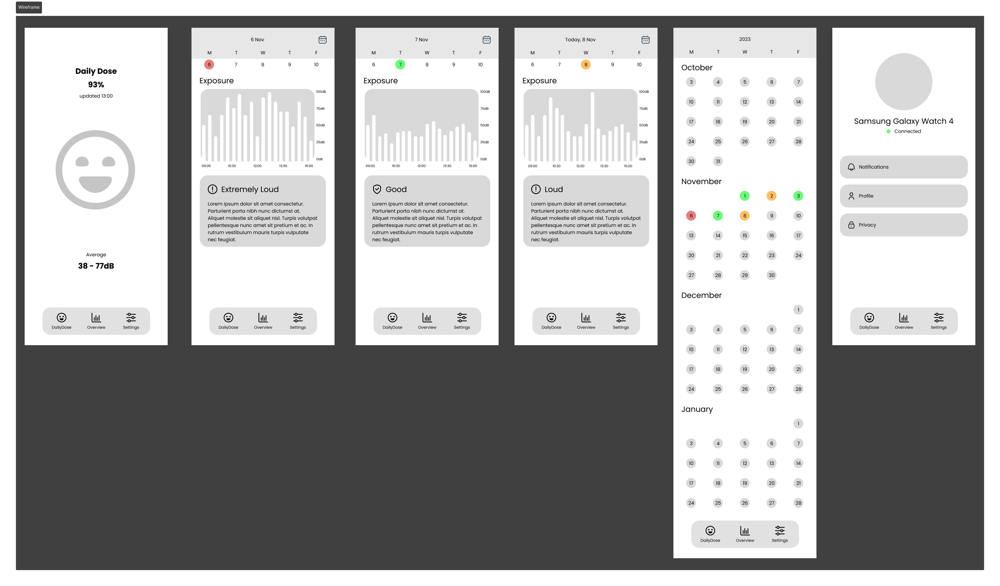

RESULTS
Before I started creating a wireframe, I took inspiration from similar apps, looking mainly at how they work in terms of navigation, layout and how they display everything. I also looked at the mood board created by Sef and Mette to give it the right style that we are looking for.
For the first version, I sketched a wireframe based on the requirements. The wireframe shows the different pages and how they are roughly laid out in my opinion. I then converted the sketch into a clickable low-fidelity prototype.
Each group member pitched their own wireframe to the project group and stakeholders. With the received feedback and later research, I continued iterating towards a high-fidelity prototype.
Together with Daan, I did an A/B test on what would be the best visualisation for the Daily Dose page. This concludes that using an ‘ear’ to visualise the Daily dose creates more awareness than a ‘smiley face’. For that reason, the Daily dose page is changed.
An interview by Sef and Daan with the target audience revealed that they would also like to have an agenda display that includes the planned lessons with necessary information. Where this information comes from could be omitted from the stakeholder for now.
While creating the high-fidelity prototype, I used the brand guide created by Luc and Mette.
To create elements that need to be used more often or have multiple variants, I have created different components.
After each group member had made their own high-fidelity prototype, we started discussing together which parts we thought were best and which we wanted to include in the final prototype.
Together with Tijn, we assembled the final prototype and made it clickable using the "prototype" function in Figma.
This high-fidelity prototype has been usability tested by IT students and PE teachers. From this came both positive and negative results. The positive results provide confirmation, and the negative results are points we have improved in the next iteration.
The biggest problem was ambiguity about what the calendar page was, as a date slider was also visible on the insights page. We solved this by merging the insights page with the DailyDose page.
Other things that have been adjusted:
- Button to month view improved.
- Average DailyDose per week added.
- The month view shows the current month when opening.
- Insights are better categorised.
- Class size is visualized.
- Animations are improved.
CONCLUSION
LEARNING OUTCOME
Learning outcome 2: User interaction (execution & validation)
By creating a high-fidelity prototype, I was able to present the concept to the stakeholders. By testing the low and high-fidelity prototypes and identifying user experience problems, choices can be explained or improved.
Learning outcome 3: Software design and realisation
By designing and interacting with the prototype, consideration was given to the structure of the pages and manufacturability for development.